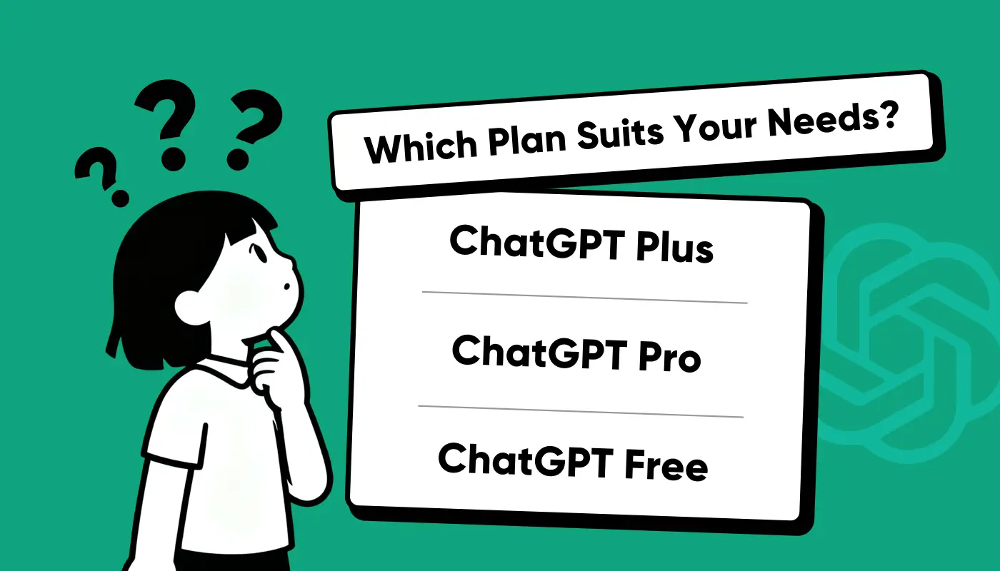
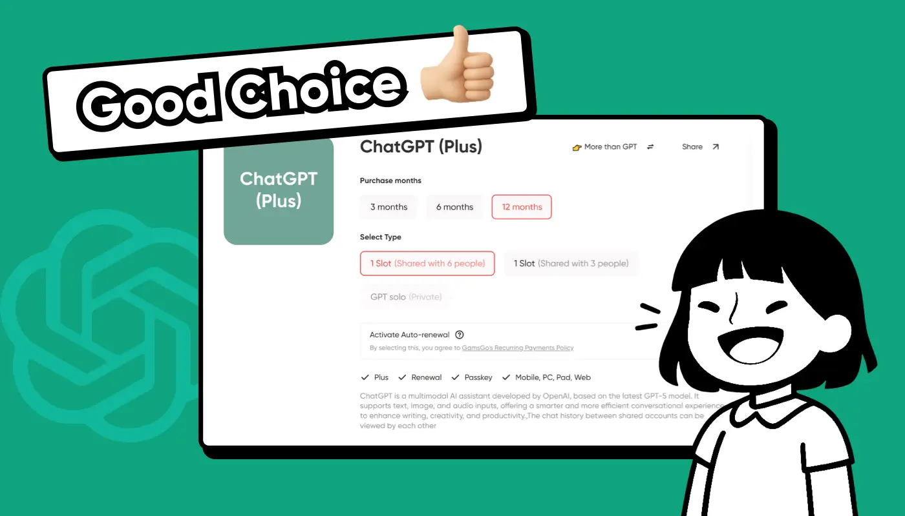

ChatGPT 2025 年定價：找到適合你的計劃
GPT-5 發布後，免費用戶和付費用戶現在都可以訪問相同的核心模型。那麼，最大的問題是：如果模型相同，付費訂閱是否仍然值得？
從免費的基礎版到每月 20 美元的ChatGPT Plus以及每月 200 美元的專業版，選擇比以往任何時候都多。真正的區別是什麼？
在本指南中，我將分解 ChatGPT 的最新 2025 年計劃和定價，比較性價比，並幫助你選擇最適合你的需求和預算的計劃。
ChatGPT 訂閱計劃和定價(2025 年)
2025 年，OpenAI 將為個人用戶提供三個訂閱級別：免費版、Plus 版和專業版。每個級別的功能會根據價格略有不同。下表清晰地列出了各個級別的區別：
| 計劃 | GPT-5 免費 | GPT-5 Plus | GPT-5 專業版 |
|---|---|---|---|
| 價格 | 自由的 | 每月 20 美元 | 每月200美元 |
| 可用型號 | GPT-5(基本訪問，速率限制) | GPT-5(全功能、多模式) | GPT-5(高級、專業級功能) |
| 每日消息限制 | 大約 30-50 條消息 | 沒有明確的限制 | 支持大容量、並發使用 |
| 上下文窗口 | 約8K-16K個代幣 | 約128K個代幣 | ~256K+ 代幣 |
| 最適合 | 普通用戶，偶爾使用 | 學生、個人創作者、專業人士 | 企業、團隊、開發人員、研究人員 |
儘管 GPT-5 現在運行在統一的核心模型上，OpenAI 仍然提供了不同的思維模式供你切換：快速模式、思考模式和專業版專屬的專業模式。這表明，雖然底層模型相同，但你的訂閱等級仍然會影響你實際使用它的方式。
ChatGPT 免費版本有哪些限制？
GPT-5 現已面向所有人免費開放，你可以直接在網頁或移動應用上試用。它非常適合日常對話，例如撰寫文章、翻譯文本、總結筆記，或處理基本的學習和辦公任務。你甚至可以上傳圖像或文件進行簡單的分析。
在使用限制範圍內，免費版本的效果與付費版本幾乎相同。但一旦達到上限，它就會自動切換到更輕量的 GPT-5 mini ，而後者在處理複雜推理、長文檔或多模態任務時會遇到困難——準確性和穩定性會明顯下降。
根據我自己的經驗和OpenAI 的官方說明，免費計劃的主要限制如下：
- 無需手動模式切換： 免費用戶無法在快速模式或思考模式之間進行選擇——系統會自動決定。
- 嚴格的消息上限： 你每 5 小時最多可以發送 10 條 GPT-5 消息。超過 10 條後，將默認使用 GPT-5 mini。
- 較短的上下文窗口： 限制為約 16K 個令牌，這意味著模型在長時間的對話或複雜的項目中會耗盡內存。
- 沒有 GPT-4o 訪問權限： 儘管 GPT-4o 現在已成為遺留問題，但許多用戶仍然喜歡它——因此沒有它是一個明顯的缺點。
因此，GPT-5 免費版適合輕度、隨意使用。但如果你想要穩定、高效、靈活的體驗，則需要考慮付費計劃。
有哪些付費 ChatGPT 訂閱可用？
下一個問題是如何選擇適合你的付費計劃。GPT-5 提供 Plus、Pro、Business 以及面向開發者的 API 。它們的價格和功能各不相同，我將逐步為你介紹每種方案。

ChatGPT Plus(20 美元/月)：適合大多數用戶的計劃
GPT-5 Plus 每月收費 20 美元。與免費版相比，它最大的優勢在於速度更快、性能更穩定。即使在高峰時段，我的測試也顯示出近乎即時的響應，這對於寫作和長時間對話至關重要。
在功能方面，Plus 釋放了 GPT-5 的全部功能：
- 擴展上下文窗口： 最多 128K 個令牌，使長文檔和複雜對話更加順暢。
- 手動模式切換： 處理複雜問題時，可以主動切換快速模式和思考模式，而不必完全依賴系統。
- 完全多模式支持： 上傳圖像和文件進行分析，嘗試使用 Sora 生成視頻，並使用 Codex 作為編碼助手。
- 更高的圖像生成限制： 每 3 小時約 50 張圖像，遠遠超出免費計劃每天 3 張的上限。
Plus 是最均衡的選擇，可以滿足大多數人的需求。價格合理，卻能提供幾乎完整的 GPT-5 體驗，且性能更流暢。對於撰寫論文的學生、撰寫報告的專業人士或創作作品的內容創作者來說，它都是理想之選，總體而言物超所值。
ChatGPT Pro(200 美元/月)：專業人士的高級計劃
GPT-5 Pro 的定價為每月 200 美元。相比 Plus，它的定位更高，專為研究人員、開發者和重度用戶設計。如果說 Plus 是面向大眾的均衡選擇，那麼 Pro 則是為專業人士量身定製的版本。
它最大的區別在於可以進入 Pro 思維模式 。該模式類似於 GPT-5 內置的"深度推理引擎"，繼承了 GPT-4 時代的推理模型(例如 o3)，在複雜邏輯、長鏈推理和研究密集型任務上能夠提供更精準的結果。
同時，Pro 還提供了 更大的上下文窗口(256K 令牌) ，使其能夠處理超長文檔和整個代碼庫。消息和上傳限制幾乎不受限制，圖像或多模態生成也沒有任何硬性限制，使其成為頻繁、密集使用的理想選擇。
ChatGPT 團隊(每位用戶每月 25 美元)：用於協作
GPT-5 商業版每位用戶每月收費 25 美元，專為小型團隊和公司打造。它包含無限量的 GPT-5 消息，並支持思考模式和專業模式，即使在高負載情況下也能保持穩定的性能。
它的主要優勢在於集中式團隊管理和統一的賬戶控制。它採用年度計費，最低限度支持兩位用戶，非常適合需要長期協作的團隊或企業。
ChatGPT API 定價：針對開發人員
GPT-5 API 面向將模型集成到應用程序或產品的開發者。它採用基於代幣計算的使用量定價 ，而非固定的月費，為開發和商業使用提供了靈活性。
它專為企業和開發者設計，而非普通用戶。借助 API，團隊可以將 GPT-5 嵌入到自己的系統中，並管理使用情況和成本。如需了解最新價格，請參閱OpenAI 官方定價頁面。
如何選擇正確的 ChatGPT 計劃？
很多人會問："這麼多訂閱選項，我該選哪個？" 關鍵取決於 你的使用頻率 和 用途 。這裡簡單分析一下：
- 輕度使用： 免費計劃就足夠了。
- 日常學習或工作： 如果你需要穩定性和速度，請選擇 Plus。
- 專業、密集使用： 對於研究或複雜推理，Pro 更為合適。
- 團隊協作： 如果多個人需要共享、管理和安全的環境，請選擇商業版。
- 開發集成： 如果你想將 GPT-5 嵌入到應用程序或工作流程中，請使用 API 來實現靈活性和控制力。
總體而言，GPT 的訂閱等級簡單易懂，每個等級都有明確的功能。如果你仍然不確定，可以先從 Plus 開始——它能滿足大多數用戶的需求。
哪個 ChatGPT 計劃最有價值？
在所有訂閱選項中，如果只能推薦一個，我會推薦 ChatGPT Plus 。它每月 20 美元，比免費方案效率更高，同時又比每月 200 美元的專業版更實惠。對於大多數人來說，Plus 在價格和功能之間取得了完美的平衡。
根據我的經驗，Plus 充分釋放了 GPT-5 的全部功能：更大的 128K 令牌上下文窗口、更快的響應時間，以及在快速模式和思考模式之間手動切換的功能。無論你是在學習、寫作、工作還是創作，Plus 都能確保你獲得流暢穩定的體驗。
這就是為什麼 Plus 是最具性價比的選擇。如果你還在猶豫，不妨先從 Plus 開始。想要深入瞭解，請查看我的另一篇文章《ChatGPT Plus 2025 年評測》，我會在其中分享更詳細的比較和實際測試。
如何以更低的價格訂閱 ChatGPT Plus？
你可能覺得每月 20 美元還是有點貴——尤其是對於學生或主要使用 ChatGPT 進行學習和日常工作的人來說。隨著時間的推移，費用會增加。那麼，有沒有更實惠的方法呢？
許多人會考慮 跨地區訂閱 ，以享受本地定價的優勢。但這需要 VPN，而且存在賬戶風險，因此不適合大多數用戶。更安全、更便捷的選擇是使用 第三方訂閱共享平台 。
從我個人經驗來看， 環球巴士 是最可靠的。它將官方訂閱分成多個共享套餐 —— 因此，即使你與他人共享賬戶，你仍然可以以更低的價格獲得完整的功能。
每月只需不到 10 美元，即可享受 ChatGPT Plus 的完整功能。綜合考慮，絕對物超所值。如果你想以更低的價格試用 GPT-5 Plus，請訪問 環球巴士 獲取完整套餐。
結論
GPT-5 的訂閱計劃涵蓋了各個級別的用戶，從免費版到專業版，再到商業版和 API 版。免費版適用於輕度使用，專業版專為研究人員和專業人士量身定製，商業版支持團隊協作，API 為開發人員提供靈活的集成。
話雖如此，對於大多數用戶來說， Plus 是最佳選擇 。每月 20 美元的價格在價格和功能之間實現了完美的平衡——提供完整的 GPT-5 體驗、更快的響應速度以及穩定可靠的性能。
如果你不確定從哪裡開始，Plus 是一個不錯的選擇。它能為你提供可靠的體驗，而不會給你的預算造成太大壓力，是 2025 年最實用的計劃。
常問問題
ChatGPT Pro 值得嗎？
對於大多數人來說，每月 200 美元的 ChatGPT Pro 並不劃算——Plus 版本已經能夠以低得多的價格滿足日常學習、工作和創作需求。Pro 版本只對研究人員、開發者或重度用戶有價值，他們需要 Pro 思維模式、256K 上下文以及幾乎無限的使用量。
免費和付費的 ChatGPT 有什麼區別？
ChatGPT 的免費版本響應速度較慢，上下文窗口大小為 16K，不支持手動模式切換，也無法訪問 GPT-4o。付費版本(例如 Plus，每月 20 美元)提供更快的速度、128K 上下文窗口、手動快速/思考模式以及更可靠的訪問。
ChatGPT 完全免費嗎？
ChatGPT 並非完全免費——它提供多種訂閱等級。免費套餐可讓你免費試用 GPT-5，但速度、消息數量、上下文和功能均受到嚴格限制。如需完整訪問權限、更快的響應速度和高級模式，你需要付費套餐，例如 Plus 或 Pro。